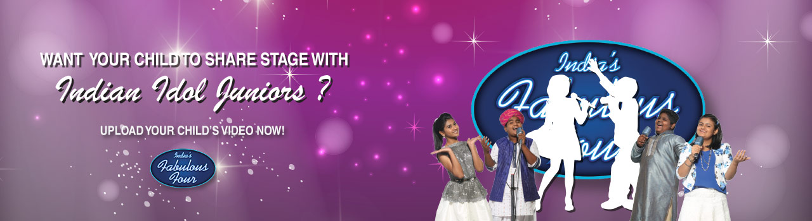

BOOK NOW
INDIAN IDOL JUNIORS (EVENT) 80♥
ARTISTS
Nithyashree V, Moti Khan, Vaishnav Girish, Aananya Nanda
Synopsis
City Of Music Indian Idol Junior Fantastic Four is a live concert featuring the four winners of Indian Idol Junior - Nithyashree V, Ananya Nanda, Vaishnav Girish and Moti Khan - in performance at City Of Music, India's first music-inspired township. They will be joined on stage by winners of an online contest run by City Of Music, who will be selected on the basis other number of votes their singing samples get online, along with the judges' choice. The contest is for children between the ages of 6 and 14 years.
The Indian Idol Junior Champs and winners of the City Of Music contest will enthrall our audience with skilled renditions of the most popular songs in their trademark style. It will also be a chance for parents and homeowners to get up close and personal with City Of Music, a one-of-a-kind music destination. This promises to be an entertaining evening of music!
VENUE: Bhilepada, Khopoli - Pali Road, 20 kms Away from Imax Imagica,Taluka Suhagad, Raigad, Maharashtra 410205, India